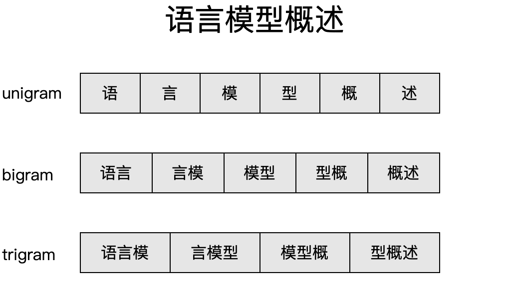
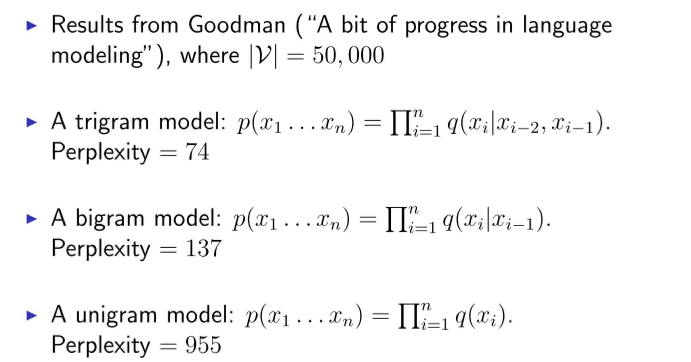

N-Gram语言模型
模型定义
N-gram模型是一种基于马尔科夫假设的语言模型，简单来说，就是当前一个单词（中文中一般以字为最小单位）出现的可能性大小只与这个单词前面一个或者几个单词有关，而与这几个单词之外的其他单词无关。其中的N即表示有关联的单词的个数（包括当前词本身）。

特别的，当N=1，即当前单词出现的可能性不依赖其他任何单词，称为unigram模型；
N=2，即当前单词出现的可能性与本身和前一个单词有关，称为bigram模型；
N=3，即当前单词出现的可能性与本身和前两个单词有关，称为trigram。
。。。
前面提到，对于一个语言序列 $w_1,w_2,…,w_n$，语言模型负责计算该序列的概率 $P（w_1,w_2,…,w_n）$。
对于unigram，由于当前词出现的可能性不依赖其他任何词，因此：
对于bigram，当前词出现的可能性只依赖于当前词汇的前一个词，因此：
其中 $P（wi|w_i-1）$ 表示在的 $w{i-1}$的 条件下 $w_i$ 出现的概率。
特别的，$P（w_1|w_0） 即 P（w_1|BOS）\ （BOS表示句子开头）$ 表示 $ w_1 $ 出现在句子开头的概率。
以此类推，K-gram模型概率为：
句子开头与结尾
可以看出，（1）式和（2）式不太一样，变成了条件概率，并且多了 BOS 对于bigram来说，因为要考虑到前一个字对于当前字的影响，那么某个字出现在句子中或者句子开头的概率是不一样的。那么为了表示某个字出现在句子开头，我们添加一个特殊符号 <BOS>（或者s）。
另外，为了保持所有句子出现的总的概率为1，需要人为在句尾添加一个特殊符号EOS（或者\s） 表示句子结束，否则所有长度为1的句子出现概率之和已经为1：$\sum_{i=1}^n P(w_i|BOS) = 1$，而添加句尾符号之后，所有的句子的概率和为1（满足一个真正的分布）。
如果没有结束标签，那么N-gram系统根本没法区分一个长度为m的句子和一个长度大于m的句子中的前m个词。
在实践中，一般是在词表中添加一个特殊符号表示结尾符号，一个有N个字的词表，在计算单词概率时，加入结尾符号，按照N+句子个数来计算。
模型计算
之所以N-gram模型属于统计语言模型，是因为N-gram模型中，我们根据极大似然估计，由单词出现的频率来计算单词的概率。
以unigram为例，因为当前单词（或者字）的出现概率与其他词无关，只与本身出现的次数有关，那么某个单词（或者字）出现的概率为
其中 $count（w_i）$ 为 $w_i$ 出现的次数， $T$ 为语料库或者说单词表中所有字的个数（加上结尾符号，结尾符号个数等于句子个数。）。
以中文为例，直观解释就是，以一篇文章作为语料库，某个字出现在这篇文章的次数 $\div$ 这篇文章的总字数，就是这个字的概率。
下面举个小例子：
有一句话 $T$ 作为语料库：“张三喜欢写代码，张三和李四喜欢听音乐。”
要求得“张三喜欢音乐”出现的概率。
除去标点符号，共18个字（其中包括一个结束符号）。“张”、“三”，“喜”、“欢”出现2次，“听”、“音”、“乐”各出现一次。则：
P（张）= P（三）= P（喜）= P（欢）= 1/9，P（听）= P（音）= P（乐）= 1/18。
P（张三喜欢听音乐）= P（张）* P（三）* P（喜）* P（欢）* P（听）* P（音）* P（乐）= 1.31*10-8。
P（张三喜欢音乐）= P（张）* P（三）* P（喜）* P（欢）* P（音）* P（乐）= 2.35*10-7。
很显然，句子的长度在很大程度上会影响句子的概率，这就是之前提到的，为何计算句子困惑度需要用N次根号去解决句子长度对于句子概率的影响。
参数选择
对于unigram，P（欢）= count（欢）/ count（T）= 1 / 9, 只需要遍历一次词表就可以计算出“欢”出现的概率。
对于bigram，则需要使用条件概率才能计算出连续两个单词出现的概率，所以N为2时，相比N为1 的N-gram模型，计算复杂度高了一个量级。
仍然以 N-gram模型计算 一节中的 $T$ 作为语料库，此时我们使用bigram模型，此时模型计算公式为：
计算条件概率的方法仍然是数次数，只不过此时数数过程稍有不同，以二维转移矩阵显示比较直观：

从表中可得：
很显然，bigram模型概率的计算过程与unigram模型比较相似，但是条件概率计算难度比单个字符出现概率计算难度复杂的多。举个例子：
对于unigram，
即只需要遍历词表一次即可输出 “欢” 出现的次数。
对于bigram，
计算 $P（听|欢)$ 需要先遍历除所有以 “欢” 开头的词语，再计算 “欢听” 的条件概率。
更一般的：
也就是说，N为2时相比N为1的N-gram模型，计算复杂度高了一个量级。
N-gram模型的参数数量与N的关系成指数级，因此计算量受到N的影响很大。
毫无疑问，增大N的值可以提高模型的性能，但是也会使得模型难以计算，所以实践中一般用bigram或者trigram。

N-gram模型的模型效果和计算量就像天平的两端，往往二者不可得兼，为了减少参数量，只能减小N的取值，但这样不可避免地会导致模型效果下降。一般来说，N-gram模型中的n的取值也就是3~5，而即使是N选取比较大的的值，也难以充分覆盖前文信息，因此仍然无法解决长距离依赖关系问题。